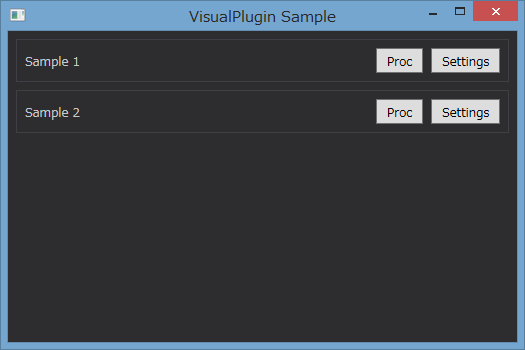
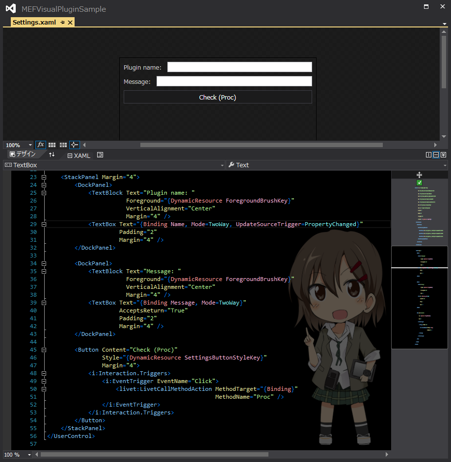
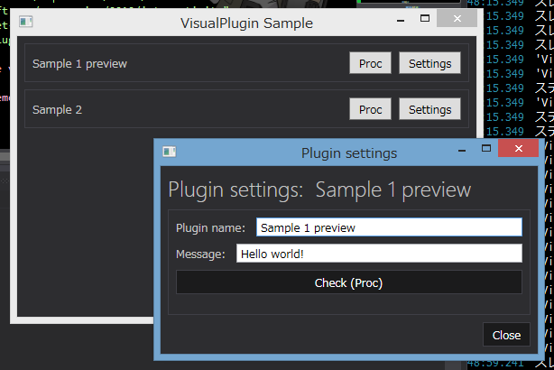

Creating a WPF Visual Plugin
Description
Make 1 WPF App and 2 Plug-ins first, then create setting pane for each Plug-in.
Project structure
VisualPlugin.UI
This is a Main WPF App. It supports loading Plug-ins, showing infomration of Plug-in and calling settings screen.
VisualPlugin.Interfaces
Interface for Plug-in.
I will show you the simple example of Interface for below members.
public interface IVisualPlugin : INotifyPropertyChanged
{
// The name of Plug-in.
string Name { get; }
// Do something for Plug-in execution.
void Proc();
// Method that returns Plug-in setting screen.
object GetSettingsView();
}
public interface IVisualPlugin : INotifyPropertyChanged { // The name of Plug-in. string Name { get; } // Do something for Plug-in execution. void Proc(); // Method that returns Plug-in setting screen. object GetSettingsView(); }
VisualPlugin.Visuals
This prohect will define UI theme, like common use of colors or fonts.
The Main of WPF application(VisualPlugin.UI) and each of Plug-in will refer this to create unified view.
If you are developing with some UI libraries, ex "MahApps.Metro", then you don't need this project.
VisualPlugin.Sample1 / Sample2
Plug-in smaples.
Sample 1, Proc() will show Message box.
Sample 2, Proc() will show new window and the path of picture you set.
Explanation
This section explains show Plug-in retrun view. Please refer the detail of MEF with Microsoft referenece "Managed Extensibility Framework".
Plug-in side
Setting screeb is defined as User Control with Sample1, Sample2 projects.User Control merges each resources in VisualPlugin.Visuals. This will unify View with the Main of WPF application (VisualPlugin.UI).
<UserControl.Resources>
<ResourceDictionary>
<ResourceDictionary.MergedDictionaries>
<ResourceDictionary Source="pack://application:,,,/VisualPlugin.Visuals;component/Styles/Brushes.xaml" />
<ResourceDictionary Source="pack://application:,,,/VisualPlugin.Visuals;component/Styles/Buttons.xaml" />
<ResourceDictionary Source="pack://application:,,,/VisualPlugin.Visuals;component/Styles/Fonts.xaml" />
</ResourceDictionary.MergedDictionaries>
</ResourceDictionary>
</UserControl.Resources>
<UserControl.Resources> <ResourceDictionary> <ResourceDictionary.MergedDictionaries> <ResourceDictionary Source="pack://application:,,,/VisualPlugin.Visuals;component/Styles/Brushes.xaml" /> <ResourceDictionary Source="pack://application:,,,/VisualPlugin.Visuals;component/Styles/Buttons.xaml" /> <ResourceDictionary Source="pack://application:,,,/VisualPlugin.Visuals;component/Styles/Fonts.xaml" /> </ResourceDictionary.MergedDictionaries> </ResourceDictionary> </UserControl.Resources>
public object GetSettingsView()
{
return new Settings
{
DataContext = this
};
}
public object GetSettingsView() { return new Settings { DataContext = this }; }
Main WPF Application side
First, ViewModel provides Setting Screen as property.
public class PluginViewModel : ViewModel
{
private object _settingsView;
public IVisualPlugin Plugin { get; private set; }
public object SettingsView
{
get { return this._settingsView ?? (this._settingsView = this.Plugin.GetSettingsView()); }
}
public PluginViewModel(IVisualPlugin plugin)
{
this.Plugin = plugin;
}
}
public class PluginViewModel : ViewModel { private object _settingsView; public IVisualPlugin Plugin { get; private set; } public object SettingsView { get { return this._settingsView ?? (this._settingsView = this.Plugin.GetSettingsView()); } } public PluginViewModel(IVisualPlugin plugin) { this.Plugin = plugin; } }
<ContentPresenter Content="{Binding SettingsView}" />
<ContentPresenter Content="{Binding SettingsView}" />
Execution Result
First, output list of Plug-ins that WPF Application had been loaded.

Then press [Settings] button to show the Settings screen.
For example, following UserControl will be.....

Display like this:) Style is also used!

What you changed in Plug-in Settings screen will be refrected immediately, to the WPF application which loaded this Plug-in.
